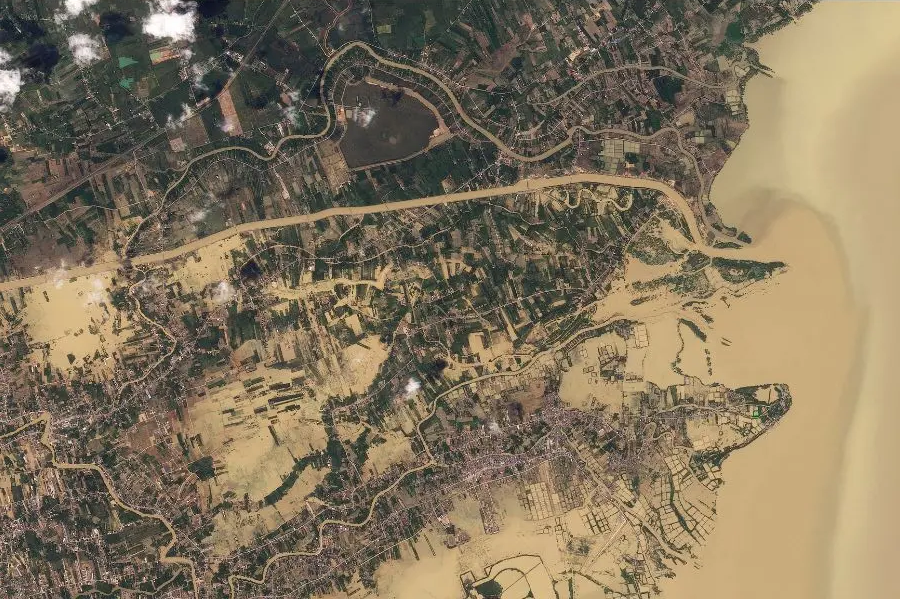
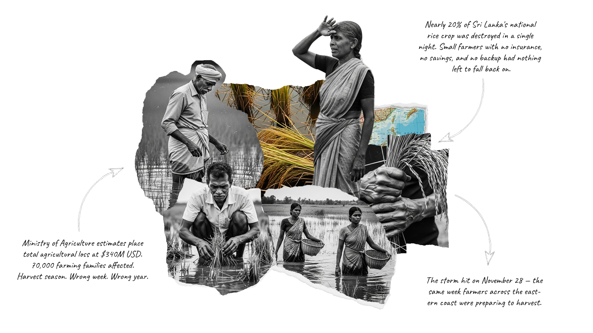

On November 28, 2025, Cyclone Ditwah hit the eastern coast with winds over 120km/h. Power and water systems failed within four hours of the storm hitting the land. Soon after, roads and bridges washed away, leaving nearly 4 million people cut off from help.
Early reports missed the true scale of the disaster, especially in the central mountains where entire towns were cut off. This report looks at the hard data behind the destruction and tracks what happened to the people left behind in the months that followed.
The First 24 Hours
Sri Lanka — November 29, 2025
Early estimates gathered before power and phone lines were fully restored.
Hover shapes to view details Tap shapes to view detailsThe Final Count
Sri Lanka — March 2026
Once the floods dried up and roads cleared, the true number of victims was much worse than anyone thought.
Hover shapes to view details Tap shapes to view detailsA Broken System
The disaster grew from 800,000 to 2.3 million people because the country's backbone broke. As power grids shut down and main roads washed away, it became nearly impossible to deliver food, medicine, and aid to the people who needed it most.
"Access was entirely severed within the first twenty-four hours."
Destroyed Roads and Buildings
Over 42% of the total financial damage was from ruined roads, bridges, and water pipes. Damage shown in USD billions.
Hover bars to view details Tap bars to view detailsLandslides and Lasting Damage
In the central highlands, heavy rain soaked the ground until it gave way. Massive landslides wiped out entire villages, forever changing the shape of the land and burying homes under tons of mud and rock.


Note: Maps showing changes to the land.
Timeline of Destruction
The storm struck in three deadly waves. First, it flooded the southern coast. Next, it triggered massive landslides in the central mountains. Finally, as it moved north, it flooded huge farming areas, making it incredibly difficult for rescue teams to reach everyone.
Where Did People Go?
After the initial rescue, a massive housing crisis began. When the government began closing official emergency shelters in January, thousands of families had no homes to return to. Instead, they had to rely on neighbors, friends, and relatives to take them in.
The Hidden Housing Crisis
As government shelters closed, families moved in with host families, putting a huge strain on local communities.
Hover chart to view details Tap chart to view detailsClosed Schools and Lost Learning
The storm didn't just break buildings; it stopped kids from learning. Over 1,300 schools were badly damaged. Even schools that survived were forced to close their doors to students because they were being used as emergency shelters for people who lost their homes.
526,000 Children Out of Class
Schools across the country shut down either because they were destroyed, or because they were turned into sleeping areas for the homeless.
Hover dots to view details Tap dots to view detailsDestroyed Crops and Farms
Nearly 20% of the country's ready-to-pick crops were destroyed by the floods. This disaster ruined the livelihoods of about 70,000 small farmers and drove up the price of food in the cities as supplies quickly ran out.

Where Did the Aid Money Go?
The UN created a central fund to manage relief money. However, many donors bypassed this system and sent money directly to other groups. Because the money wasn't organized centrally, big gaps were left and many major needs were ignored.
Aid Stalls in February
By April 2026, the central aid fund stopped growing. Millions of dollars were still needed, but the money stopped coming in.
Hover graphic to view details Tap graphic to view detailsMoney avoiding the main plan
A Recovery That Stalled
The storm is gone. The damage is not. Roads are still broken. Farms are still empty. Nearly 149,000 people are still living in borrowed rooms and crowded halls. The aid money dried up before the job was finished — and without a clear plan to rebuild, many families are left waiting for a recovery that may never fully come.
Cite This Work
Dissanayake, C., & Nillekumbura, I. (2026). How a Single Storm Broke Sri Lanka [Data Story]. Retrieved from https://chaturadissanayake.github.io/cyclone-ditwah/
Chatura Dissanayake and Imali Nillekumbura. (2026). How a Single Storm Broke Sri Lanka. Retrieved from https://chaturadissanayake.github.io/cyclone-ditwah/
@article{dissanayake-cyclone-ditwah-2026,
title = {How a Single Storm Broke Sri Lanka},
author = {Dissanayake, Chatura and Nillekumbura, Imali},
year = {2026},
journal = {Data Story},
url = {https://chaturadissanayake.github.io/cyclone-ditwah/}
}